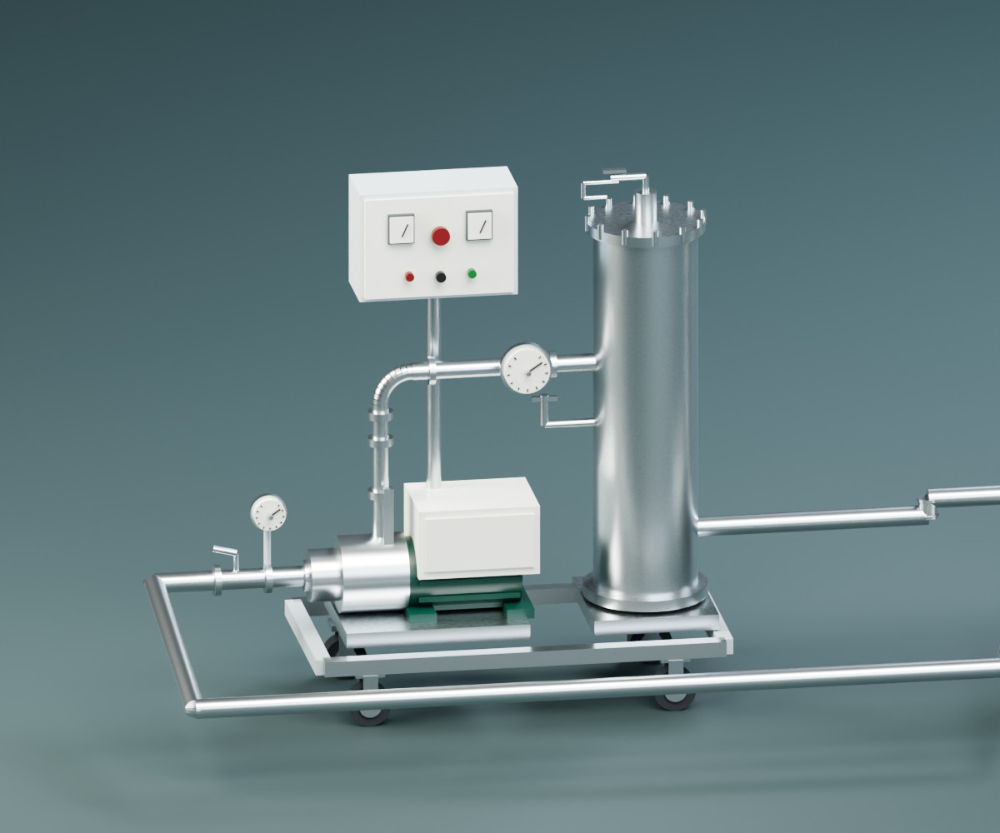
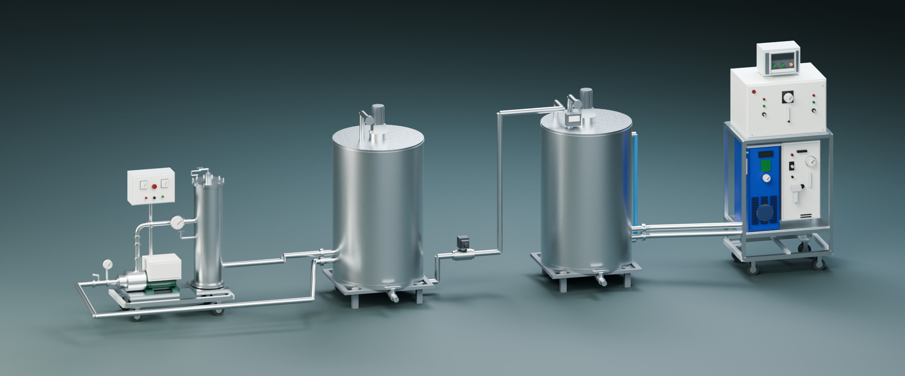
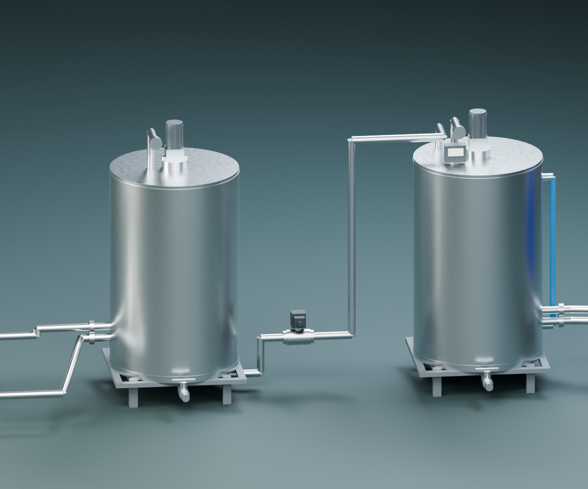
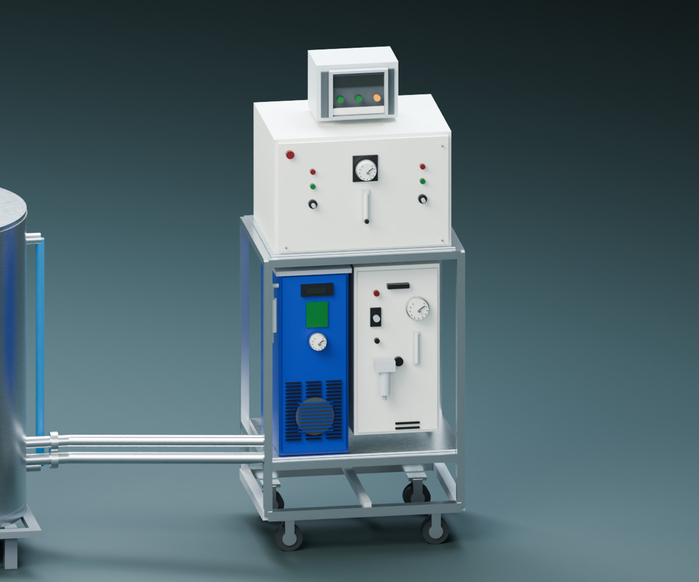

COMPONENT 01
염수의 이동을 연결합니다.
설비의 이송·순환부와 연결 배관을 자세히 살펴봅니다. 기존 탱크와의 연결 위치, 유입·배출 조건을 함께 검토합니다.
- 살펴볼 구성
- 펌프 · 연결 배관 · 압력계
- 현장에서 확인
- 기존 탱크 위치와 배관 접속 조건
- 함께 검토
- 유입·순환·배출 흐름
THE BRINE REUSE SYSTEM
절임염수 재활용을 검토하는 현장을 위해.
설비 구성과 설치 조건, 운영에 필요한 항목을 하나씩 살펴보세요.

01 / SYSTEM COMPONENTS
아래 항목을 선택해 설비의 주요 부분과
도입 전 확인할 조건을 살펴보세요.

COMPONENT 01
설비의 이송·순환부와 연결 배관을 자세히 살펴봅니다. 기존 탱크와의 연결 위치, 유입·배출 조건을 함께 검토합니다.

COMPONENT 02
제공된 구성 모델에는 200L 처리 탱크 두 기가 포함되어 있습니다. 외부 원수·저류 탱크는 별도로 검토합니다.

COMPONENT 03
계기와 제어반을 통해 운전 상태를 확인하는 구성을 표현했습니다. 현장에 필요한 계측 항목, 점검 방식과 운영 지원 범위를 정합니다.
SUPPLY & SITE CONDITIONS
모델에 표현된 장비와 현장에서 추가로 확인할 항목을 함께 검토합니다.
최종 공급 범위와 사양은 협의 견적에서 확인합니다.
컨테이너 바닥 면적만으로 전체 설치 면적을 정하지 않습니다.
COMPACT INSTALLATION / X-RAY VIEW
공간은 간결하게.
내부 구성은 한눈에.
장비 모델을 3×6m 컨테이너에 배치한 컷어웨이 시각화입니다. 내부의 200L 처리 탱크 두 기는 장비에 포함되어 있으며, 외부 원수·저류 탱크는 표시하지 않았습니다.
컨테이너 외측 6×3×2.6m, 문과 통로는 시각화 가정입니다. 실제 설치 가능 여부는 반입·정비 동선, 바닥 하중 및 현장 규격 확인 후 판단합니다.

FROM THE FIELD
제공된 개발·시험 사진에서 시료 외관과 거품 회수 모습을 살펴봅니다.


사진은 해당 시료와 촬영 시점의 모습입니다. 외관만으로 위생 안전성이나 재사용 적합성을 판단하지 않으며, 염도·탁도·냄새·pH·미생물·잔류오존 등 필요한 항목을 확인합니다.
NEXT / HOW IT WORKS